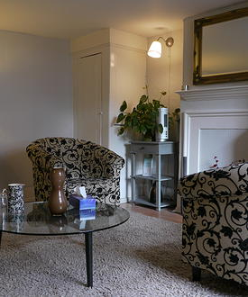

Appointments: Primarily, the initial session is used to explore the possibility of our working together. It is an opportunity for you to get a better sense of me and how I work, and also to ask any questions about what therapy entails. We can discuss what your expectations of therapy might be, and any anxieties you might have about beginning. We will also go over practicalities such as payment and timing of sessions. It can be a good idea to meet with more than one therapist for an initial consultation, to give you the best chance of finding somebody who you feel happy to work with.
If, after this initial session, you decide that you would like to begin working with me, then therapy can continue for as long as you want it to. You may find that a few sessions are all that you need, or you may wish to carry on much beyond this. Whether short- or long-term, or something in between, we'll regularly look at how you're finding our conversations, and whether what you want from therapy has changed, or is changing. Indeed, these questions form an important part of our work together and help us re-focus on the very things you're here to explore.
Fees: The cost of the initial session is £25. The cost of all subsequent sessions is £65. All sessions last for 50 minutes.
Frequency of Sessions: Sessions, ideally, take place weekly, although I am not dogmatic about this; I'm aware that some people's circumstances don't always allow for such frequency. Likewise, although a fixed weekly time-slot is most common, some people prefer to come at a different time each week. I do my best to work round people's work schedules and try to offer as much flexibility with timings as possible.